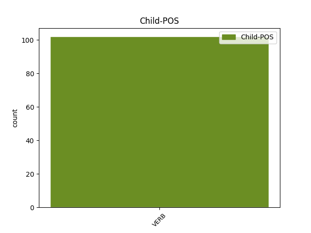

Distribution of features within this leaf

Agreement Rules sorted by frequency.
- When the dependent token is the conjunct(conj) of the head token, and the dependent token is VERB.
1 Tá bí VERB PresInd Mood=Ind|Tense=Pres 0 _ _ _
2 318,000 _ _ _ _ 0 _ _ _
3 de _ _ _ _ 0 _ _ _
4 bhaill _ _ _ _ 0 _ _ _
5 ag _ _ _ _ 0 _ _ _
6 Eaglais _ _ _ _ 0 _ _ _
7 Phreispitéireach _ _ _ _ 0 _ _ _
8 na _ _ _ _ 0 _ _ _
9 hÉireann _ _ _ _ 0 _ _ _
10 agus _ _ _ _ 0 _ _ _
11 friothálann friotháil VERB VTI Mood=Ind|Tense=Pres 1 conj _ _
12 ar _ _ _ _ 0 _ _ _
13 an _ _ _ _ 0 _ _ _
14 oileán _ _ _ _ 0 _ _ _
15 go _ _ _ _ 0 _ _ _
16 léir _ _ _ _ 0 _ _ _
17 . _ _ _ _ 0 _ _ _
1 ' _ _ _ _ 0 _ _ _
2 Tosnóidh tosnaigh VERB VTI Mood=Ind|Tense=Fut 16 comp:obj _ _
3 an _ _ _ _ 0 _ _ _
4 Pharáid _ _ _ _ 0 _ _ _
5 ag _ _ _ _ 0 _ _ _
6 an _ _ _ _ 0 _ _ _
7 Ospidéal _ _ _ _ 0 _ _ _
8 agus _ _ _ _ 0 _ _ _
9 tabharfaidh _ _ _ _ 0 _ _ _
10 sí _ _ _ _ 0 _ _ _
11 cuairt _ _ _ _ 0 _ _ _
12 an _ _ _ _ 0 _ _ _
13 bhaile _ _ _ _ 0 _ _ _
14 ' _ _ _ _ 0 _ _ _
15 , _ _ _ _ 0 _ _ _
16 arsa arsa VERB PastInd Mood=Ind|Tense=Past 0 _ _ _
17 Feargus _ _ _ _ 0 _ _ _
18 ó _ _ _ _ 0 _ _ _
19 Flatharta _ _ _ _ 0 _ _ _
20 , _ _ _ _ 0 _ _ _
21 le _ _ _ _ 0 _ _ _
22 Foinse _ _ _ _ 0 _ _ _
23 . _ _ _ _ 0 _ _ _
1 Chomh _ _ _ _ 0 _ _ _
2 maith _ _ _ _ 0 _ _ _
3 le _ _ _ _ 0 _ _ _
4 bheith _ _ _ _ 0 _ _ _
5 ina _ _ _ _ 0 _ _ _
6 mbaill _ _ _ _ 0 _ _ _
7 den _ _ _ _ 0 _ _ _
8 Dámhscoil _ _ _ _ 0 _ _ _
9 Nua _ _ _ _ 0 _ _ _
10 , _ _ _ _ 0 _ _ _
11 tá _ _ _ _ 0 _ _ _
12 na _ _ _ _ 0 _ _ _
13 Manannaigh _ _ _ _ 0 _ _ _
14 seo _ _ _ _ 0 _ _ _
15 taobh _ _ _ _ 0 _ _ _
16 thiar _ _ _ _ 0 _ _ _
17 den _ _ _ _ 0 _ _ _
18 Ghaelscoil _ _ _ _ 0 _ _ _
19 úr _ _ _ _ 0 _ _ _
20 i _ _ _ _ 0 _ _ _
21 Manainn _ _ _ _ 0 _ _ _
22 a _ _ _ _ 0 _ _ _
23 d' _ _ _ _ 0 _ _ _
24 oscail oscail VERB VTI Form=Len|Mood=Ind|Tense=Past 0 _ _ _
25 ag _ _ _ _ 0 _ _ _
26 tús _ _ _ _ 0 _ _ _
27 na _ _ _ _ 0 _ _ _
28 scoilbhliana _ _ _ _ 0 _ _ _
29 úire _ _ _ _ 0 _ _ _
30 agus _ _ _ _ 0 _ _ _
31 a _ _ _ _ 0 _ _ _
32 bhfuil bí VERB PresInd Form=Ecl|Mood=Ind|Tense=Pres 24 mod@relcl _ _
33 naonúr _ _ _ _ 0 _ _ _
34 páistí _ _ _ _ 0 _ _ _
35 ar _ _ _ _ 0 _ _ _
36 a _ _ _ _ 0 _ _ _
37 rollaí _ _ _ _ 0 _ _ _
38 . _ _ _ _ 0 _ _ _
1 Chuaigh téigh VERB VTI Form=Len|Mood=Ind|Tense=Past 0 _ _ _
2 sé _ _ _ _ 0 _ _ _
3 i _ _ _ _ 0 _ _ _
4 gcomhairle _ _ _ _ 0 _ _ _
5 le _ _ _ _ 0 _ _ _
6 saineolaithe _ _ _ _ 0 _ _ _
7 dlí _ _ _ _ 0 _ _ _
8 agus _ _ _ _ 0 _ _ _
9 leighis _ _ _ _ 0 _ _ _
10 fad _ _ _ _ 0 _ _ _
11 a _ _ _ _ 0 _ _ _
12 bhí bí VERB PastInd Form=Len|Mood=Ind|Tense=Past 1 mod _ _
13 Fianna _ _ _ _ 0 _ _ _
14 Fáil _ _ _ _ 0 _ _ _
15 ar _ _ _ _ 0 _ _ _
16 thaobh _ _ _ _ 0 _ _ _
17 an _ _ _ _ 0 _ _ _
18 fhreasúra _ _ _ _ 0 _ _ _
19 roimh _ _ _ _ 0 _ _ _
20 olltoghchán _ _ _ _ 0 _ _ _
21 1997 _ _ _ _ 0 _ _ _
22 . _ _ _ _ 0 _ _ _
1 Faisean _ _ _ _ 0 _ _ _
2 le _ _ _ _ 0 _ _ _
3 Úna _ _ _ _ 0 _ _ _
4 Ní _ _ _ _ 0 _ _ _
5 Bhrannagáin _ _ _ _ 0 _ _ _
6 Ná ná PART Vb Mood=Imp|PartType=Vb 0 _ _ _
7 híocaigí híoc VERB Imper Mood=Imp|Number=Plur|Person=2 6 comp:obj@prt _ _
8 na _ _ _ _ 0 _ _ _
9 táillí _ _ _ _ 0 _ _ _
10 - _ _ _ _ 0 _ _ _
11 Fahey _ _ _ _ 0 _ _ _
12 Brú _ _ _ _ 0 _ _ _
13 Tráchta _ _ _ _ 0 _ _ _
14 i _ _ _ _ 0 _ _ _
15 Maigh _ _ _ _ 0 _ _ _
16 Eo _ _ _ _ 0 _ _ _
17 . _ _ _ _ 0 _ _ _
1 Tógaimis _ _ _ _ 0 _ _ _
2 an _ _ _ _ 0 _ _ _
3 ' _ _ _ _ 0 _ _ _
4 ceardaí _ _ _ _ 0 _ _ _
5 ' _ _ _ _ 0 _ _ _
6 ina _ _ _ _ 0 _ _ _
7 shampla _ _ _ _ 0 _ _ _
8 ón _ _ _ _ 0 _ _ _
9 scéal _ _ _ _ 0 _ _ _
10 ' _ _ _ _ 0 _ _ _
11 Ná ná PART Vb Mood=Imp|PartType=Vb 0 _ _ _
12 lig lig VERB VTI Mood=Imp|Number=Sing|Person=2 11 flat _ _
13 sinn _ _ _ _ 0 _ _ _
14 i _ _ _ _ 0 _ _ _
15 gcathú _ _ _ _ 0 _ _ _
16 ' _ _ _ _ 0 _ _ _
17 . _ _ _ _ 0 _ _ _
Disagree Examples:
1 An _ _ _ _ 0 _ _ _
2 chéad _ _ _ _ 0 _ _ _
3 chéim _ _ _ _ 0 _ _ _
4 eile _ _ _ _ 0 _ _ _
5 a _ _ _ _ 0 _ _ _
6 bheidh _ _ _ _ 0 _ _ _
7 sa _ _ _ _ 0 _ _ _
8 bhfeachtas _ _ _ _ 0 _ _ _
9 ná _ _ _ _ 0 _ _ _
10 fógraí _ _ _ _ 0 _ _ _
11 a _ _ _ _ 0 _ _ _
12 fhoilsiú _ _ _ _ 0 _ _ _
13 sna _ _ _ _ 0 _ _ _
14 príomhnuachtáin _ _ _ _ 0 _ _ _
15 , _ _ _ _ 0 _ _ _
16 an _ _ _ _ 0 _ _ _
17 tseachtain _ _ _ _ 0 _ _ _
18 seo _ _ _ _ 0 _ _ _
19 chugainn _ _ _ _ 0 _ _ _
20 , _ _ _ _ 0 _ _ _
21 ag _ _ _ _ 0 _ _ _
22 lorg _ _ _ _ 0 _ _ _
23 tacaíochta _ _ _ _ 0 _ _ _
24 agus _ _ _ _ 0 _ _ _
25 airgid _ _ _ _ 0 _ _ _
26 ón _ _ _ _ 0 _ _ _
27 phobal _ _ _ _ 0 _ _ _
28 le _ _ _ _ 0 _ _ _
29 haghaidh _ _ _ _ 0 _ _ _
30 an _ _ _ _ 0 _ _ _
31 fheachtais _ _ _ _ 0 _ _ _
32 seo _ _ _ _ 0 _ _ _
33 , _ _ _ _ 0 _ _ _
34 a _ _ _ _ 0 _ _ _
35 bhfuil bí VERB PresInd Form=Ecl|Mood=Ind|Tense=Pres 0 _ _ _
36 ' _ _ _ _ 0 _ _ _
37 Tabhair tabhair VERB VTI Mood=Imp|Number=Sing|Person=2 35 subj@cleft _ _
38 abhaile _ _ _ _ 0 _ _ _
39 iad _ _ _ _ 0 _ _ _
40 ' _ _ _ _ 0 _ _ _
41 mar _ _ _ _ 0 _ _ _
42 theideal _ _ _ _ 0 _ _ _
43 air _ _ _ _ 0 _ _ _
44 . _ _ _ _ 0 _ _ _
1 Dar dar VERB PresInd Mood=Ind|Tense=Pres 0 _ _ _
2 leo _ _ _ _ 0 _ _ _
3 , _ _ _ _ 0 _ _ _
4 sa _ _ _ _ 0 _ _ _
5 chás _ _ _ _ 0 _ _ _
6 seo _ _ _ _ 0 _ _ _
7 , _ _ _ _ 0 _ _ _
8 bheidís bí VERB Cond Form=Len|Mood=Cnd|Number=Plur|Person=3 1 comp:obj _ _
9 ag _ _ _ _ 0 _ _ _
10 géilleadh _ _ _ _ 0 _ _ _
11 an _ _ _ _ 0 _ _ _
12 iomarca _ _ _ _ 0 _ _ _
13 dá _ _ _ _ 0 _ _ _
14 neamhspleáchas _ _ _ _ 0 _ _ _
15 náisiúnta _ _ _ _ 0 _ _ _
16 don _ _ _ _ 0 _ _ _
17 Aontas _ _ _ _ 0 _ _ _
18 . _ _ _ _ 0 _ _ _
1 ' _ _ _ _ 0 _ _ _
2 Má _ _ _ _ 0 _ _ _
3 chaitheann _ _ _ _ 0 _ _ _
4 sé _ _ _ _ 0 _ _ _
5 an _ _ _ _ 0 _ _ _
6 lá _ _ _ _ 0 _ _ _
7 inniu _ _ _ _ 0 _ _ _
8 tá bí VERB PresInd Mood=Ind|Tense=Pres 20 comp:obj _ _
9 seans _ _ _ _ 0 _ _ _
10 aige _ _ _ _ 0 _ _ _
11 , _ _ _ _ 0 _ _ _
12 tá _ _ _ _ 0 _ _ _
13 sé _ _ _ _ 0 _ _ _
14 ag _ _ _ _ 0 _ _ _
15 dul _ _ _ _ 0 _ _ _
16 trí _ _ _ _ 0 _ _ _
17 fhaothú _ _ _ _ 0 _ _ _
18 ' _ _ _ _ 0 _ _ _
19 a _ _ _ _ 0 _ _ _
20 déarfadh abair VERB VTI Mood=Cnd 0 _ _ _
21 duine _ _ _ _ 0 _ _ _
22 . _ _ _ _ 0 _ _ _